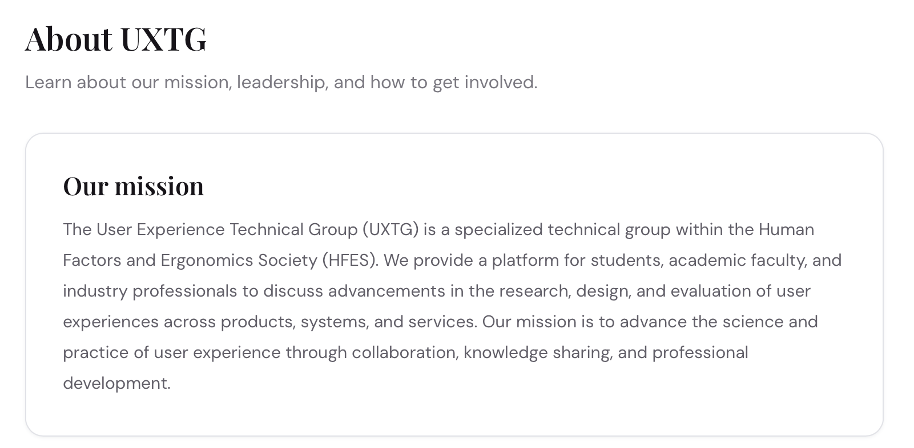

HFES UXTG Information Portal
Making a professional community easier to navigate.
Accessibility and quality assurance for an event-first information portal, informed by stakeholder needs and a four-participant usability study.

The problem
UXTG information was spread across email, HFES Connect, LinkedIn, and separate web pages. Members and prospective members needed a clearer way to discover events, career opportunities, resources, and community connections.
My contribution
I led the accessibility and quality-assurance workstream, focusing on WCAG 2.1 AA auditing, Lighthouse evaluation, mobile responsiveness, and the usability of important task flows. I contributed to a broader design process that translated stakeholder needs into measurable specifications and used prototype testing to identify and prioritize improvements.
The design process
The project report documents 12 stakeholder interviews, 19 unique needs, 21 target specifications, five personas, and seven initial concepts. Concept screening led to an event-first, low-cost portal organized around Home, Events, Careers, Resources, Community, and About.
The prototype was evaluated through concurrent think-aloud sessions with four participants. Tasks included event registration, career discovery, resource discovery, mentor connection, and membership signup.
Reported evaluation results
| Measure | Reported result | Context |
|---|---|---|
| Event-registration time | 14.18 seconds | Mean task completion time in prototype testing |
| System Usability Scale | 86.87 out of 100 | Reported mean in the four-participant study |
| Post-Study System Usability Questionnaire | 1.44 on a 1–7 scale | Lower scores indicate more favorable responses |
| Specification performance | 12 of 14 evaluated specifications met ideal targets | Seven further specifications were outside prototype scope |
Prototype usability study, four participants
Reported mean task completion time (seconds)
View the data as a table
| Task | Seconds |
|---|---|
| Event registration | 14.18 |
| Career listing discovery | 19.35 |
| Resource discovery | 26.34 |
| Mentor connection | 25.05 |
| Membership signup | 27.14 |
What the findings changed
Membership instructions were present, but the next action was not sufficiently clear. The revised About screen placed a prominent membership card above the mission content. The design also replaced an ambiguous mentor-availability dot with explicit labels and button states, and made homepage statistics behave like the navigation links users expected.

The revised interface illustrates a design change; it does not establish a measured post-change improvement.
Reflection
Accessibility and usability work is strongest when findings lead to specific design decisions. This project connected evaluation to actionable changes, while showing why a small prototype study needs broader follow-up before drawing conclusions about production use.
Scope note
These are project-level prototype findings from four participants. The redesigned flows require follow-up testing; no post-refinement speed improvement or production conversion increase is claimed. The prototype HTML simulates sign-in and confirmations and does not establish a secure backend or live transaction processing.